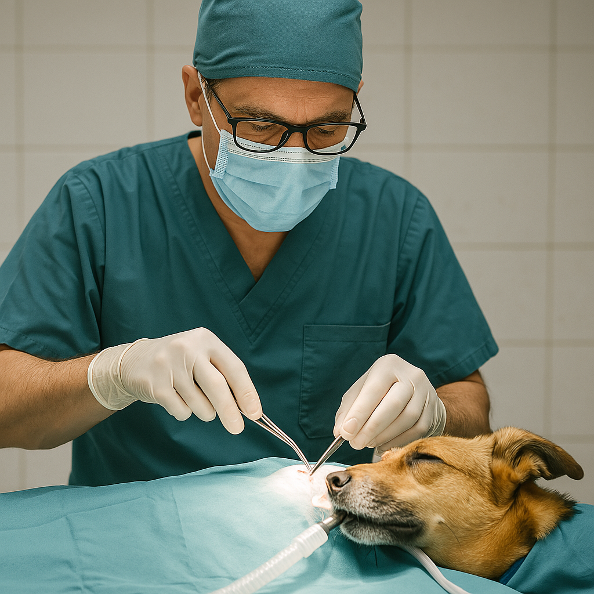
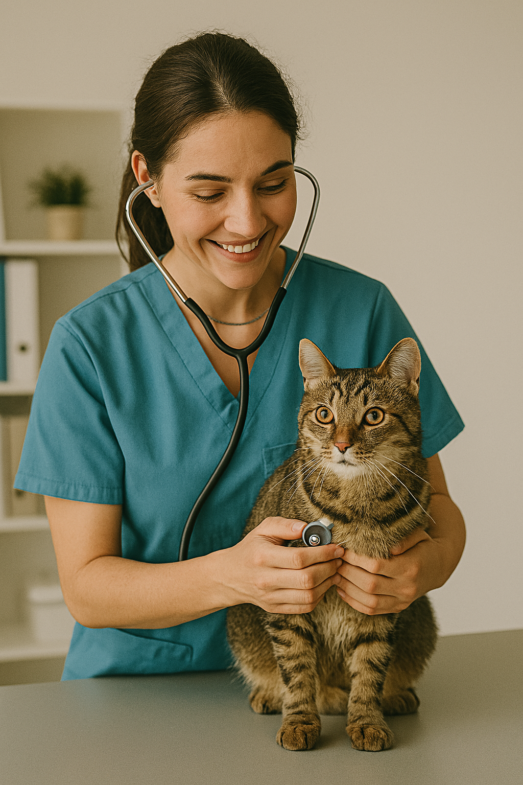
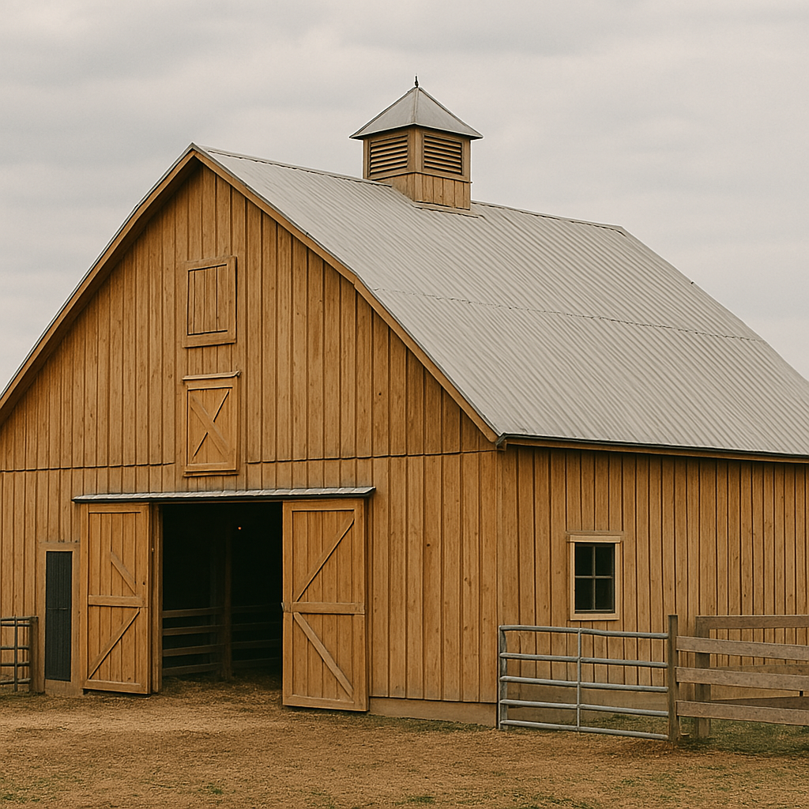
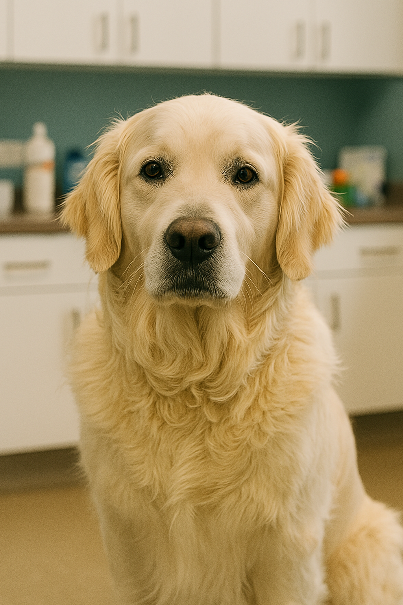
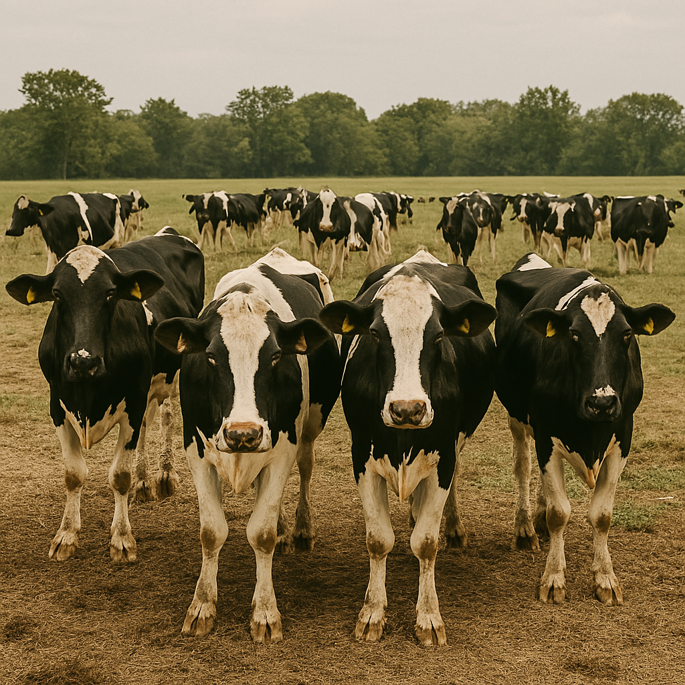
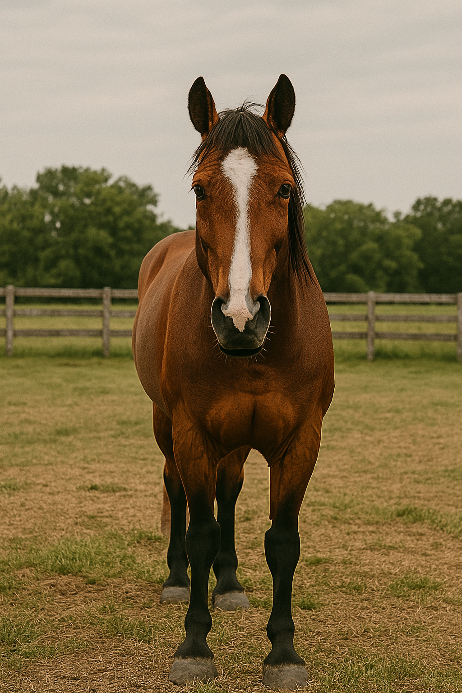

At Paws Hooves and Whiskers, our mission is to provide compassionate, expert veterinary care for animals of all sizes—from beloved pets to hardworking livestock. We are dedicated to promoting health, performance, and quality of life through trusted, on-site services and modern medical practices. Whether it’s a family dog or a herd of cattle, we partner with owners to support the well-being of every animal and the success of the people who care for them.
urgent care
Our team is ready to handle emergencies with speed and compassion. From sudden illnesses to unexpected injuries, we offer same-day urgent care to help stabilize your pet and provide immediate treatment when it matters most.
Learn MoreBasic Check Up
Routine wellness exams help catch potential issues early. We perform full physicals, monitor vital signs, and offer personalized advice on vaccinations, nutrition, and long-term care for pets and farm animals alike.
Learn Morehome visits
Can't make it to the clinic? We come to you. Our home visit services are perfect for large animals, anxious pets, or multi-animal households — bringing expert veterinary care right to your doorstep.
Learn Morespay and neuter
We offer safe and affordable spay and neuter procedures to prevent unwanted litters and promote lifelong health. Our caring team will walk you through every step, from pre-op prep to smooth recovery.
Learn Moreherd health plan
Keep your herd thriving with customized health plans designed for prevention, productivity, and profitability. From vaccinations to nutrition consulting, we support farms with reliable, proactive care.
Learn Morelarge animals
We specialize in veterinary care for horses, cattle, goats, and other large animals. Whether it’s on-site exams, lameness evaluations, or herd consultations, we’re equipped to serve your barn or pasture.
Learn More